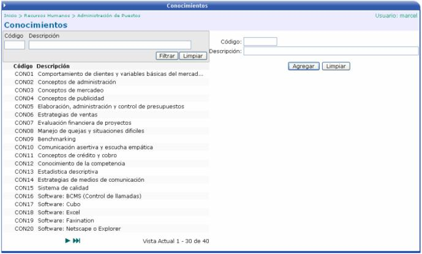
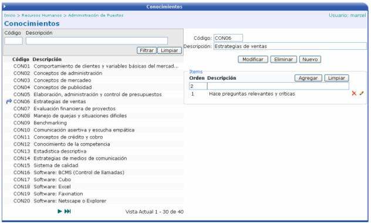

En esta opción se definen los conocimientos que debe de tener un candidato para optar por un puesto. Aquí se crean todos los conocimientos independientemente del puesto que los requiera. Cuando se cree el puesto a solicitar, es donde se le asociarán los conocimientos específicos que tiene que tener la persona para ese puesto.
Se tiene que crear un código y una descripción
del conocimiento. Luego presionar el botón  para guardar
los cambios.
para guardar
los cambios.

Una vez creado un conocimiento, se le pueden agregar ítems que lo describan, si el usuario así lo requiere.
 Elimina un ítem
Elimina un ítem  Modifica un ítem
Modifica un ítem
